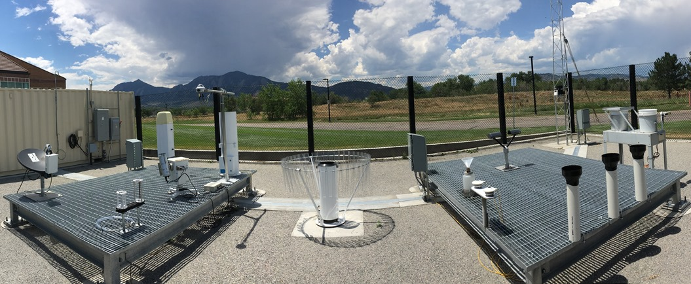
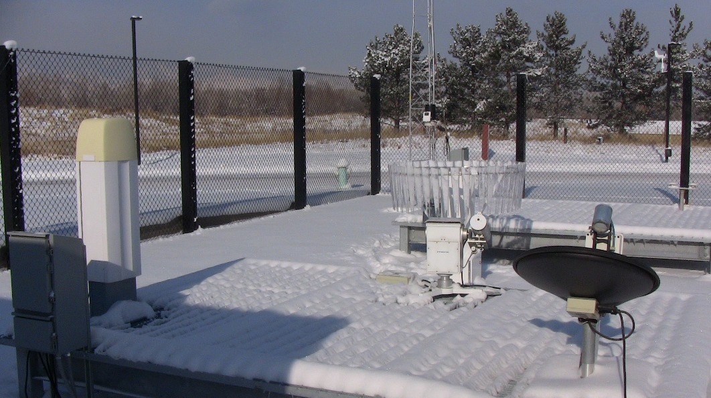
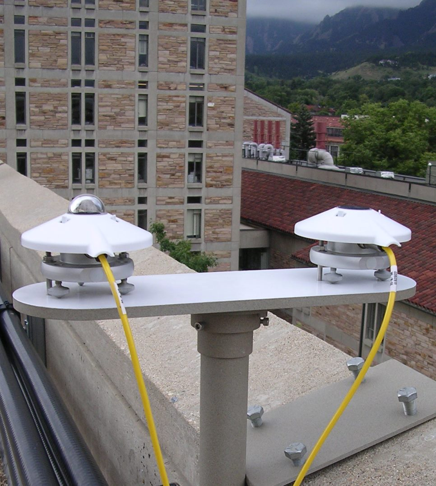

Skywatch Observatory
Skywatch is a rooftop atmospheric monitoring station on the Duane Physics Building at the University of Colorado Boulder, operated by the Department of Atmospheric and Oceanic Sciences (ATOC). The station provides real-time and archived measurements of solar radiation, ozone, precipitation, cloud height, and other atmospheric variables.



News
- July 18, 2017
- SPN1 added to the Skywatch instrument suite. The instrument provides total (global) and diffuse irradiances.
- April 10, 2014
- The Thermo Environmental UV Photometric Ozone Monitor is running again after replacing the lamp. We were lucky to find a replacement bulb at Jelight Company in Irvine, California.
Instrumentation
The observatory houses nine instruments that continuously measure atmospheric conditions. Select an instrument from the sidebar or the navigation menu to view today's data.
- Pyranometer — shortwave solar irradiance
- Pyrgeometer — longwave infrared irradiance
- Total/Diffuse Pyranometer — direct vs. diffuse radiation
- Ceilometer — cloud base height
- Sunphotometer — aerosol optical depth
- Rain Gauge — precipitation accumulation
- Laser Disdrometer — raindrop size distribution
- Micro Rain Radar — vertical rain profiles
- Ozone Monitor — surface ozone concentration